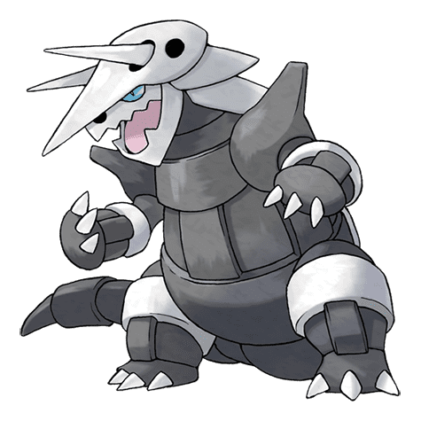
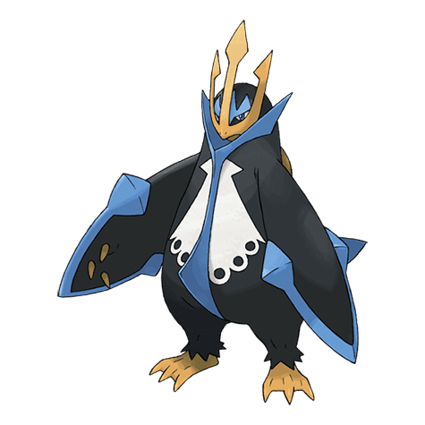
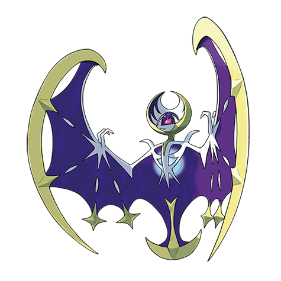
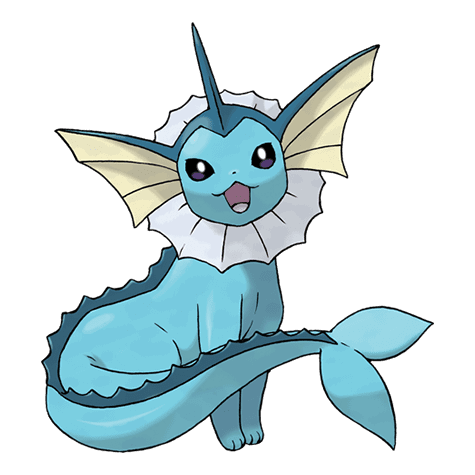
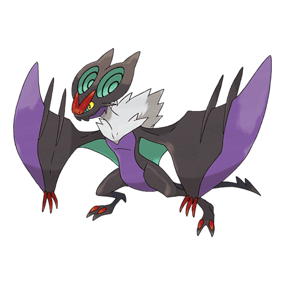

O Haunter é a evolução do Pokémon Gastly, e a pré-evolução do Pokémon Gengar, ambos, também, do tipo Fantasma/Veneno. Quando Gastly, o Pokémon possui somente a cabeça, ao evoluir para o Haunter, ele recebe duas mãos, e ao evoluir para o Gengar, ele recebe também os pés, completando o formato humanóide
steelix
teelix é um Pokémon introduzido na segunda geração da franquia e um dos primeiros a ter o tipo Steel. Evolui de Onix quando trocado segurando um Metal Coat e pode mega evoluir se estiver segurando a Steelixite e ter um treinador com Mega Ring e Key Stone.
Gyarados
Gyarados é um Pokémon do tipo Água introduzido na Geração I. É a evolução de Magikarp e o que o destaca é que sua aparência muda drasticamente ao evoluir e o fato do poder dele aumentar de forma drástica.
Articuno
Articuno é um pokémon pássaro lendário que pode controlar o gelo. O bater de suas asas arrepia o ar. Como resultado, é dito que quando este Pokémon voa, a neve cairá.
Lugia
Lugia é uma espécie de Pokémon guardião dos três pássaros lendários de Pokémon Red & Blue e aparta suas brigas como na animação Pokémon 2000 O Filme: O Poder de Um.
Aggron

Aggroné um Pokémon tipo Aço e Pedra. Ele é a forma evoluida de Lairon e é a forma final de Aron. Ele Mega Evolui para Mega Aggron quando entra em contato com uma Aggronite.
Empoleon

Empoleon é um Emperor Pokémon do tipo Água/Aço. É a forma final da linha de Piplup. O líder tem os chifres maiores.
Mismagius
Mismagius é uma criatura fantasmagórica , Sua localidade pertence à gélida região de Sinnoh e habita locais sombrios com poucas presenças humanas.
Carnivine
Carnivine - O Pokémon Catador de Inseto
Pendura-se nas árvores dos pântanos e, usando suas vinhas se camufla.
Lunala

Lunala é um Pokémon Lendário dos tipos Psíquico e Fantasma, É uma das formas evoluídas de Cosmoem e uma das formas finais de Cosmog. É o mascote de Pokémon Moon.
Salazzle
O Pokémon Lagarto Tóxico
Vive em um Harém repleto de Salandit machos. Seu gás venenoso pode ser diluído e ser usado para a confecção de perfumes. Força os Salandit que foram atraídos pelos feromônios a trabalharem para ela.
Vaporeon

Vaporeon e um Pokémon do tipo água . é uma das evoluções posiveis do Eevee, sendo as outras Jolteon, Flareon, Umbreon, Espeon, Leafeon, Glaceon e Sylveon.
Reshiram
Reshiram é um dos lendários da Região de Unova. É um pokemón do tipo Dragão/Fogo e que sempre estava em combate com seu irmão mais novo Zekrom.
Miraidon
O Hadron Engine do Miraidon é uma Ability introduzida em Pokémon Scarlet e Pokémon Violet. O Miraidon transforma o chão em Electric Terrain quando entra numa batalha. Enquanto o Electric Terrain estiver ativo, o Ataque Especial do Miraidon será reforçado.
Noivern

Noivern (em Japonês: オンバーン Onbãn) é um Pokémon tipo Voador e Dragão.
Pangoro
Pangoro (em Japonês: ゴロンダ Goronda) é um Pokémon tipo lutador e noturno.
Zamazenta
Zamazenta é um Pokémon do tipo lutador.
Dragapult
Dragapult é um pokémon da oitava geração do tipo dragão e fantasma.
Trevenant
Trevenant (Japonês: オーロット Ohrot) é um Pokémon dos tipos Fantasma e Grama
Rillaboom
Rillaboom (Japonês: ゴリランダー Gorirander) é um Pokémon do tipo Grama, categorizado como Pokémon Percussionista
Ninetales
Ninetales (em Japonês: キュウコン Kyukon) é um Pokémon do tipo fogo.
Rayquaza
Rayquaza é o terceiro pokémon lendário de Omega Ruby e Alpha Sapphire, agindo como uma espécie de mediador entre os outros dois membros do trio, Groudon e Kyogre.
Solgaleo
Solgaleo é um Pokémon do tipo Psíquico e Steel
Arcanine
arcanine é um pokémon de tipo fogo.
Volcanion
Volcanion é o primeiro pokémon do tipo fogo/água, unindo os dois elementos para criar vapor, que ele consegue expelir e "causar explosões e soltar vapor quente dos membros em suas costas".
Chien-Pao
O Lendário do tipo Gelo e Sombrio. Chien-Pao é um felino branco, com pequenos detalhes azul no seu corpo. Ele é do tipo Sombrio e Gelo e era uma espada lendária antes de se tornar um Pokémon.
Arbok
Arbok (Japonês: アーボック Arbok) é um Pokémon do tipo Venenoso, categorizado como Pokémon Cobra
ceruledge
Ceruledge é um Pokémon do tipo Fogo/Fantasma,
Garchomp
Garchompé um pokémon de tipo dragão e terra que vem de gible e gabite.
Koraidon
o lendário Koraidon (do tipo Dragão e Luta
Hoopa
Hoopa (Japonês: フーパ Hoopa) é um Pokémon Mítico dos tipos Psíquico e Fantasma
Mienshao
Mienshao (em Japonês: コジョンド Kojondo) é um Pokémon tipo lutador.
Xerneas
Xerneas é um Pokémon do tipo fada.
Great Tusk
Great Tusk é um Pokémon de tipo Terrestre e Lutador.